旅籠屋cafe KATARI
築100年の家に、人が集まり、語りたくなる時間を。
掲載の写真はフリー素材のイメージで、店舗の実際の様子ではありません(撮影地不明のものを含みます)。実際の写真はご提供いただいたものに差し替えます。
お店の由来と想い
旅籠屋(はたごや)は、江戸時代の旅館を指す言葉。KATARIは、「自分のことを語りたくなる場所になってほしい」という思いで付けられた屋号と紹介されています。
オーナーの佐々木諒平さんは、空き家になった親族の家を「これだけ立派な家を生かさないのはもったいない」と考え、「かつてのようにたくさんの人が集まる場所がしたい」と開業されたそうです。築約100年の古民家を改装し、昔の品々を語り継ぎたいという思いから、あえて古いものを残している、とも伝えられています。
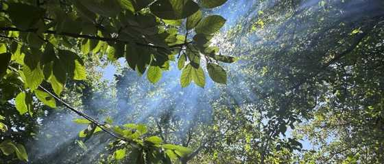
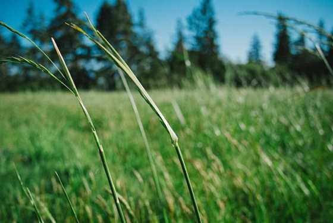
田畑に囲まれて
田園風景の中にあるお店です。

木の家のぬくもり
木の香りのする古民家の空間。
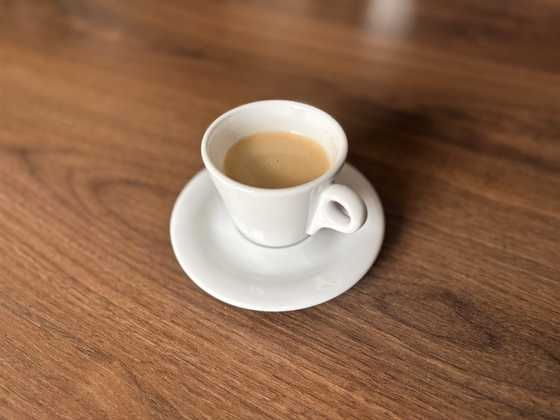
昼はカフェ、夜はナイトカフェ
金・土曜は夜も営業と紹介されています(詳細は準備中)。
民泊施設も兼ね、宿泊は1日2組限定・要予約と紹介されています。
メニュー
ベルギーのレシピを再現したというワッフルのほか、パスタやドリンクが紹介されています。営業時間・定休日・価格・詳細は準備中です。電話番号も準備中です。
ワッフル・焼き菓子
写真はイメージです。詳細は準備中。
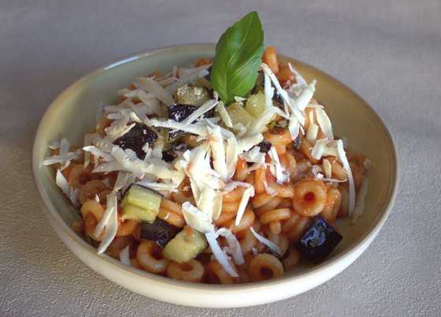
パスタ
写真はイメージです。詳細は準備中。
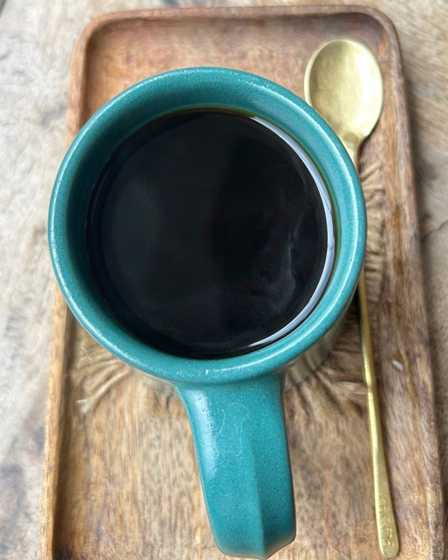
コーヒー
詳細は準備中。
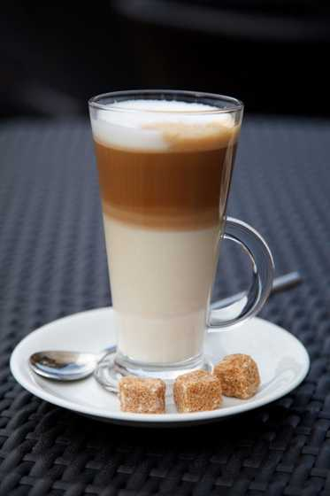
ラテ・ドリンク
詳細は準備中。
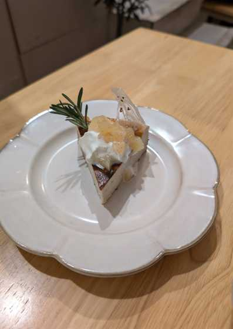
ケーキ
詳細は準備中。
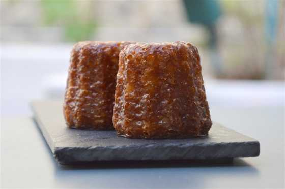
焼き菓子
詳細は準備中。
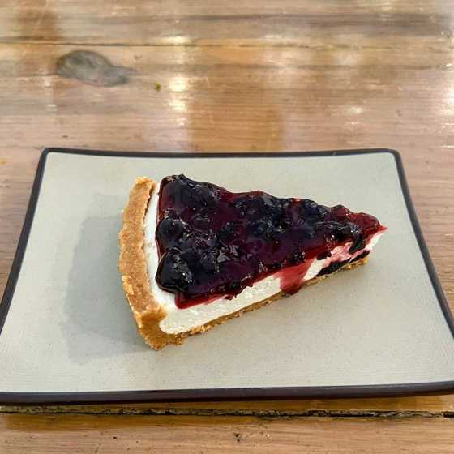
季節の甘いもの
詳細は準備中。
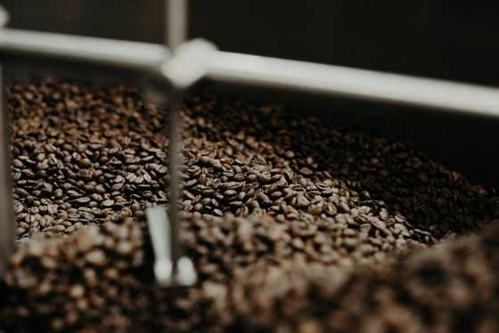
コーヒー豆
詳細は準備中。

クッキー
詳細は準備中。
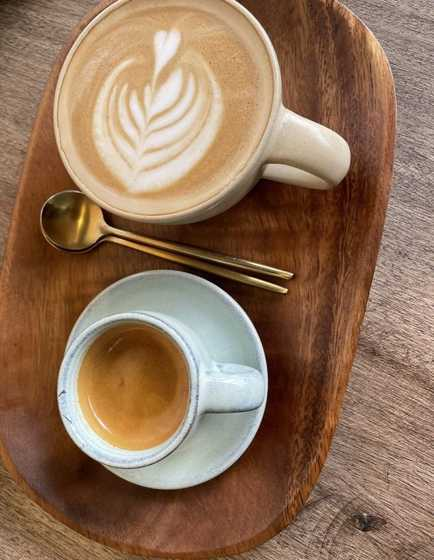
ひと休みのお供に
詳細は準備中。
口コミ
田んぼの緑を眺めながら、ゆっくり過ごせました。古い家具がそのままで落ち着きます。
焼きたてのワッフルを食べながら、つい長話をしてしまいました。
夜のカフェは静かで隠れ家のよう。また誰かを連れて行きたいです。
上記は制作側が作成したイメージ例で、実在のお客様の声ではありません。
写真クレジット
全て CC0(CC0 1.0)のフリー素材を、縮小・切り抜きなどして使用しています。
croissants: Herry Wibisono / butter-cookies: sdnet01 / latte-tray: Tilak Bahadur Karki / leaves: Seyyed Ahmadreza Mahjoob / meadow-grass: Paul Jarvis / cup-table: Ludwig You / coffee-black: Yam B Chhetri / latte-glass: Petr Kratochvil / cake-blueberry: Alina Kakshapati / cake-pear: Andy Li / canele: DimiTalen / beans: rawpixel掲載(作者記載なし) / wood: Bango Textures / pasta: 8w9d。出典は各 CC0 公開ページ(Wikimedia Commons・WordPress Photo Directory・rawpixel)。